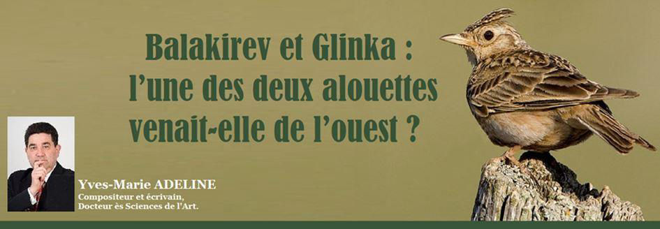
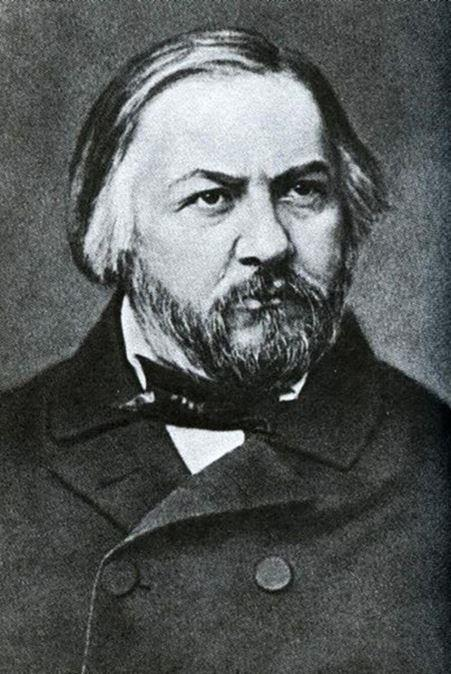
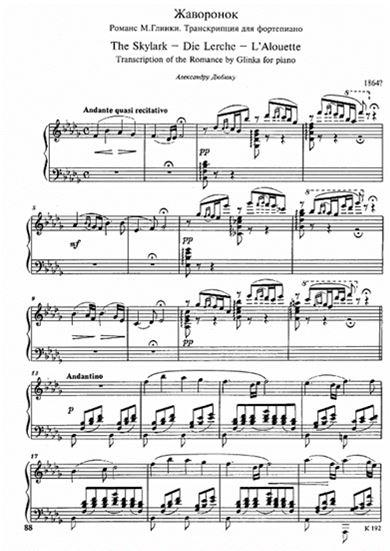

Balakirev et Glinka : l’une des deux alouettes venait-elle de l’ouest ?
par Yves-Marie ADELINE

Chacun connaît L’Alouette (en anglais : « The Lark »), une œuvre pour piano et chant composée en 1840 par Glinka puis reprise presque vingt-cinq ans plus tard au piano seul, mais avec des ornementations personnelles particulièrement heureuses, par Balakirev, en 1864.
On a dit de Glinka (1804-1857) qu’il a été le fondateur de la musique russe, comme Pouchkine est le père de la littérature russe.
Les deux hommes sont d’ailleurs contemporains, puisque Pouchkine est né cinq ans seulement avant lui. On sait aussi que les deux hommes se connurent à partir de 1828 : cela donne des frissons, ce génie partagé, ces deux géants qui se rencontrent et restent amis jusqu’à la mort tragiquement prématurée de l’écrivain.
L’Alouette de Glinka appartient à un ensemble d’airs pour piano et chant intitulé Les Adieux de St Petersbourg : c’est un chant typiquement russe, inspiré indubitablement des mélodies populaires que Glinka a cherchées dans l’âme profonde du pays, et qu’il a trouvées dès l’enfance - souvenons-nous par exemple que son père avait constitué une troupe de musiciens parmi ses serfs.
On peut dire qu’il participait alors au lancement d’une mode qu’ont suivie d’autres compositeurs de pays différents : les rhapsodies hongroises de Liszt, les danses slaves de Dvorak, les musiques catalanes de Déodat de Séverac, ou hispanisantes de Manuel de Falla, parmi tant d’autres… Il n’y eut guère que les Italiens et les Allemands pour ne pas avoir eu à chercher d’autres sources d’inspiration que celles qu’ils possédaient déjà en abondance, puisqu’ils jouissaient les uns et les autres d’une prépondérance confortable, peut-être pas incontestable, mais vainement contestée.
Toujours est-il que L’Alouette de Glinka est un air que l’on pourrait pratiquement classer dans le folklore, même s’il jouit par ailleurs des caractéristiques de la musique savante.
Tout autrement se présente son adaptation au piano seul par Balakirev…
Ici, on relèvera un paradoxe : Balakirev est présenté, à son tour, comme un des maîtres de la musique russe revendiquée comme telle, jusqu’à prendre la tête du fameux Groupe des Cinq – comptant avec lui Rimski-Korsakov, Cui, Moussorgski et Borodine - dont la raison d’être était de mettre en valeur le folklore national, les traditions musicales populaires, et par cette voie se détacher le plus possible des modes occidentales.
Force est de constater, cependant, que son admirable adaptation au piano solo doit beaucoup à l’écriture pianistique de Liszt. On peut même dire que – comme il arrive souvent avec les Russes – l’élève, en tout cas sur cette œuvre-là, a semble-t-il mieux réussi que le maître. Les effets sonores du vol de l’alouette, rendus par les trilles, sont bien plus brillants : on croit entendre et voir à la fois les battements d’aile de l’oiseau ; tandis que souvent, la virtuosité exigée dans beaucoup de partitions du grand Liszt est, admettons-le, avant tout décorative. Ce n’est pas sous-estimer l’œuvre de Liszt que décrire cela : ses Années de pèlerinage, par exemple, surplombent la plupart des grands maîtres du piano, mais en cette occurrence, dans cette œuvre-là, dans cette Alouette, on peut admettre que Balakirev a su donner un sens plus convainquant à sa virtuosité. C’est même un hommage à Liszt que de l’écrire, car encore une fois, sans l’esprit de Liszt, sans cette inspiration somme toute « occidentale » tant honnie par le militantisme musical du Groupe des Cinq, comment Balakirev aurait-il pu écrire un tel chef-d’œuvre ?
En tout état de cause, l’effet rendu est si réussi que, lorsque l’on cherche à écouter L’Alouette, on tombe plus rapidement sur l’adaptation de Balakirev que sur l’œuvre originale. Ce n’est pas une injustice, il faut convenir qu’elle est encore meilleure que la chanson.
Partager cette page